はなゑみ 実装ノート
Miro ボードに散らばっている企画、ワイヤー、カンプ、議事メモを、実装に必要な単位で整理したもの。体・心・魂の状態を可視化し、トレーナーと一緒にセルフワークを続けるウェルビーイングアプリ。
ボードの読み方
新旧の案が混在している。実装の正は「UI画面整理（開発向け）」フレームとし、それ以外の初期ワイヤー、マインドマップ、左下の大きなカンプ群は経緯と参考として扱う。
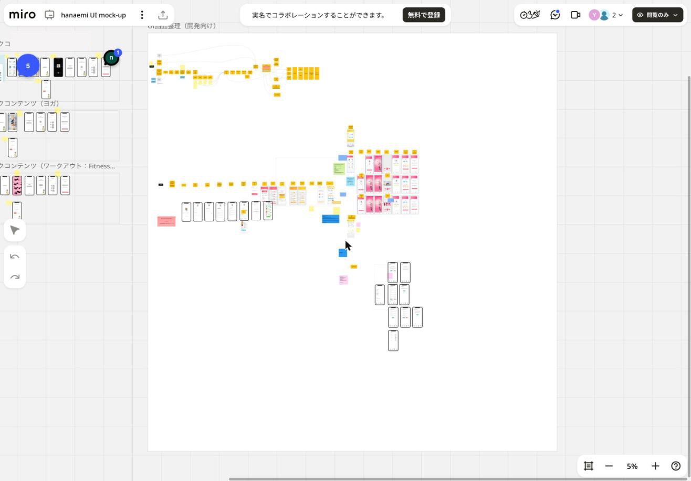
サービス概要
昨日より今日、上を向いて歩けるように。日常の「自分磨き」を楽しくサポートし、「今幸せな人」「いきいきと生きる人」を増やす。企画初期の仮称は「ココロバランスサービス(仮)」。
どんなに関心があっても「めんどくさい」と感じると続かない。このアプリは継続性の課題を解決することを重視し、キーワードに「ラク・実感・楽しい・ごほうび」を掲げている。
3つの柱
- NAVIGATION: 個性を持つ AI コーディネーター（トレーナー）が、朝・ブレイクタイム・夜にプログラムを提案
- ACTIVITY: スキマ時間とスマホで始められる活動（瞑想、ヨガ、日記など）
- INFORMATION: 自分の状態の可視化と記録
ターゲット
- 30〜40代の女性。子どもの手が離れつつあり、平日に自分の時間を取りやすい
- ペルソナ: 39歳の専業主婦、横浜市在住、4人家族。モーニングルーティーンやヨガに興味はあるが踏み出せていない
- 数値で分かると楽しい。日本市場では「不安をゼロにする」価値が刺さる
ユーザーインタビューの要点（3名、匿名化）
| ユーザーA | ユーザーB | ユーザーC | |
|---|---|---|---|
| 属性 | 40代、会社員 | 40代、既婚・子あり、フリーランス | 30代、既婚・子あり、経営者 |
| 自分の時間 | △ 週末 | ◎ 平日の朝〜15時 | × 朝4〜6時のみ |
| 傾向 | ストイック、失敗を恐れる。強めのコーチングは苦手 | マイペースでゆるく続けたい。手帳派。天気予報が1日の最初のタッチポイント | ルーティーン重視、頑張りすぎない。誰が言っているかを重視 |
| 示唆 | 記録と可視化が大事。手軽さ | ジャーナリングに関心。自分に近い人の活動を見たい | ロールモデルを真似するスタイルが合う |
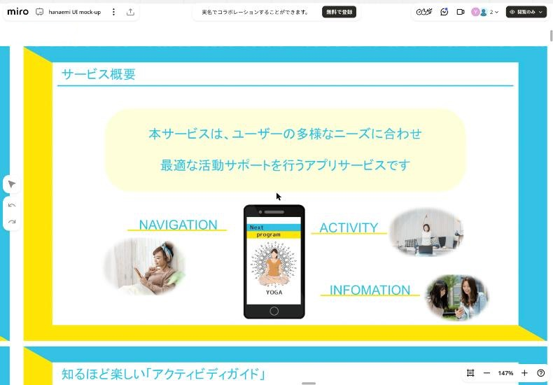
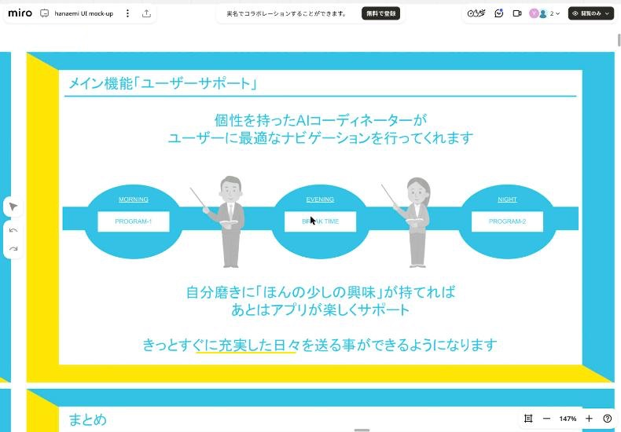
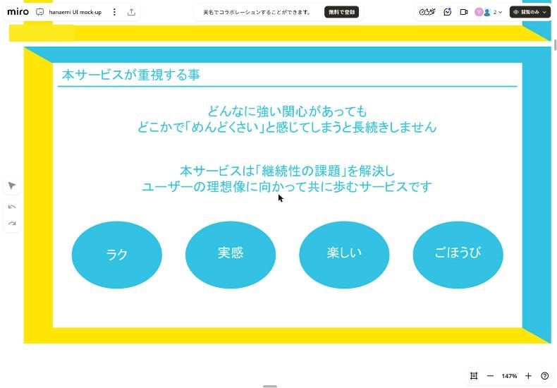
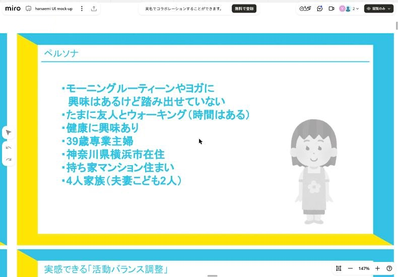
画面遷移
開発向けフレームのコネクタ（矢印）から起こした遷移図。図が横にはみ出す場合はスクロールできる。
flowchart TD
Start([アプリ起動<br/>オープニングサウンド]) --> Entry[ログイン / 新規登録]
Entry --> Login[ログイン<br/>ID・パスワード / SNS連携]
Login --> Today
Entry --> Signup[新規登録<br/>メール・パスワード / Google・Apple]
Signup --> B1[基本情報1 姓名]
B1 --> B2[基本情報2 性別・年代・エリア・職種]
B2 --> B3[基本情報3 起床・オフ・就寝時間]
B3 --> Pre[仮登録完了<br/>認証メール送信]
Pre --> Ver[本登録完了<br/>スタート]
Ver --> Tr[トレーナー選択<br/>4人から選ぶ]
Tr --> TI[トリニティ設問説明]
TI --> Q1[設問 体]
Q1 --> Q2[設問 心]
Q2 --> Q3[設問 精神]
Q3 --> TR[判定中 → 結果表示]
TR --> Today[今日の状態<br/>晴れ・曇り・雨・雷]
Today --> Home{{ホーム}}
Home --> Vit[体重・体温入力]
Home --> Re[トリニティ再診断] --> TI
Home --> Rec[おすすめセルフワーク]
Home -->|タブ| SW[セルフワーク一覧]
Home -->|タブ| G[グラフ]
Home -->|タブ| Acc[アカウント設定]
Rec --> CS
SW --> CS[コース設定<br/>3分・5分・10分]
CS --> Gd[トレーナーのスタートガイド]
Gd --> Pl[再生 音声 / 動画]
Pl --> Rt[評価 5つ星]
Rt --> Bd[達成・バッジ]
Bd --> Rp[レポート]
Rp --> Wk[週の記録]
Wk -->|もっと探索する| SW
Pl -->|左上の×| Qd[中断確認<br/>別のコーチ・プログラムを提案]
| ボトムタブ | 遷移先 | 備考 |
|---|---|---|
| ホーム | ホーム画面 | |
| ダッシュボード | グラフ画面 | フロー図では「グラフ」と表記。名称は要統一 |
| セルフワーク | セルフワーク一覧 | |
| アカウント | 設定トップ | アカウント情報、アラーム、通知、キャラクター、お知らせ、規約、ログアウト |
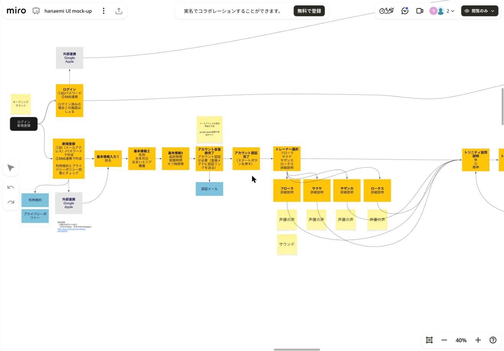
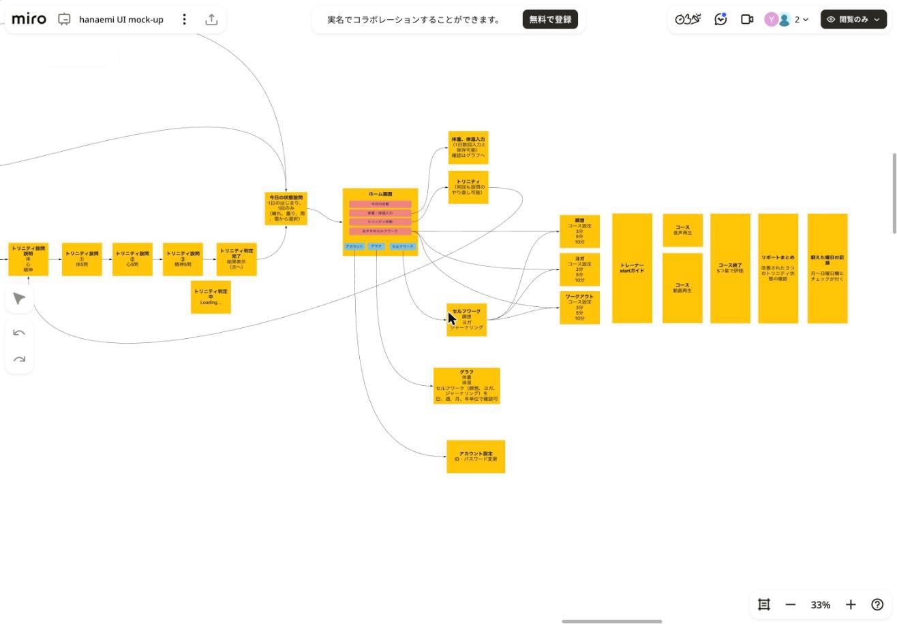
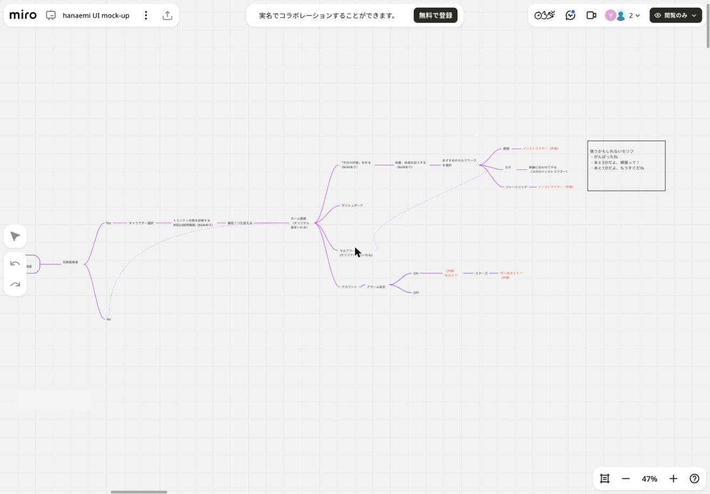
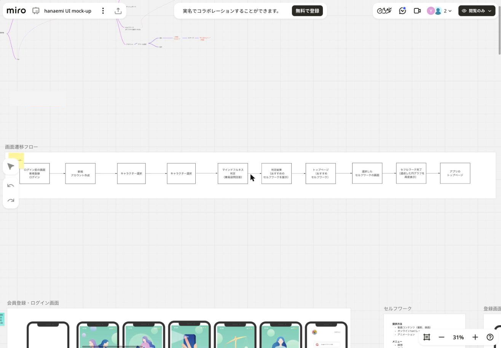
画面一覧
画面 ID はこのノートで便宜的に振ったもの。項目と文言はカンプとワイヤーから書き起こした。
ホーム画面の構成
Today's condition ☀️
Trinity Balance
おすすめのセルフワーク
Today's condition: その日の天気アイコンとラベル、最新の体重と体温。
Trinity Balance: 体・心・魂の3つの円グラフ（％）と、各項目の天気アイコン。「再診断する」ボタン。右上の × で非表示にできる。
おすすめのセルフワーク: トリニティの状態に連動した提案。選んだトレーナーのイラストを添える。
過去案の補足: 今日の状態・体重・体温・生理周期の4項目は表示・非表示を切り替えられる。曇りが何日も続くとアラートを出す。
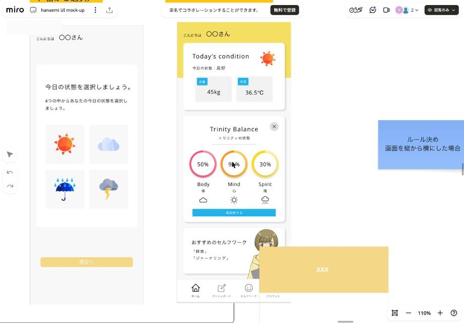
全画面
| ID | 画面 | 主な要素 |
|---|---|---|
| A-01 | スプラッシュ | オープニングサウンド。花が広がるアニメーション（案） |
| A-02 | スタートガイド | 最大5枚。イラストは外部に依頼 |
| A-03 | ログイン / 新規登録 | ロゴ、規約同意チェック、「新規登録する」「ログインする」 |
| A-04 | ログイン | ID・パスワード、Google / Apple。ログイン済みならスキップ |
| A-05 | 新規登録 | メールアドレス、パスワード（英数8文字以上）、確認用 |
| A-06 | 基本情報 1/3 | 姓・名（漢字・ひらがな・カタカナのみ） |
| A-07 | 基本情報 2/3 | 性別（男性 / 女性 / 無回答）、年代、エリア、職種、婚姻状態 |
| A-08 | 基本情報 3/3 | 起床・オフ・就寝時間。各時間にアラームを設定するチェック |
| A-09 | 仮登録完了 | 「hanaemi本登録のご案内」メールで本登録するよう案内 |
| A-10 | 本登録完了 | 「はなゑみ ウェルビーイングの世界へようこそ」、スタート |
| O-01〜02 | トレーナー選択・詳細 | 4人のカルーセル、プロフィール、ボイス、「このトレーナーにする」 |
| O-03〜04 | 設問説明 | 「今のあなたを知りましょう」。1〜5の回答方法の説明 |
| O-05 | 設問 体 | 5問、1〜5の5段階（悪い〜良い） |
| O-06 | 心・精神の選択 | Mind / Spirit に進むか「ホーム画面へ」 |
| O-07〜08 | 設問 心・精神 | 各4〜5問 |
| O-09〜10 | 判定中・結果 | Loading、「あなたの今の状態は〇〇ですね」 |
| O-11 | つなぎ | 「次に、あなたの今日の気分を教えてください」 |
| D-01 | 今日の状態 | 晴れ・曇り・雨・雷の2×2選択、「測定へ」。1日1回 |
| H-01 | ホーム | 上の図のとおり |
| H-02 | 体重・体温入力 | 日時、体重(kg)、体温(℃)、テンキー、保存。1日に複数回可 |
| G-01 | グラフ | All / Weight / Body temperature / Selfwork、Day〜Year、平均値、単位設定 |
| S-01 | セルフワーク一覧 | 瞑想、ジャーナリング、ワークアウト、断捨離、ヨガ、モーニングダイアリー |
| S-02 | コース設定 | バランス（効く領域）、タイム（3/5/10分）、ボイス（瞑想）、スタート |
| S-03〜04 | スタートガイド | 「目を閉じて！準備はいい？」→「さあ、はじめるよ！よーい、スタート！」 |
| S-05 | 再生 | 瞑想は音声、ヨガ・ワークアウトは動画。全画面ボタン |
| S-06 | 中断確認 | 「終了する前に〜に変えますか」はい / いいえ |
| S-07 | 評価 | 5つ星（非常に良い！/ 良い！/ 普通）、スキップ |
| S-08 | 達成・バッジ | 「ご達成おめでとうございます！」シングルスターなど |
| S-09 | レポート | トレーニング時間、継続日数、トリニティのビフォー / アフター |
| S-10 | 週の記録 | 「今日もナイスジョブ！」月〜日のチェック、「もっと探索する」 |
| U-01 | 設定トップ | アカウント情報 / アラーム / アプリ内通知 / キャラクター / お知らせ一覧 / 利用規約 / プライバシーポリシー / ログアウト |
| U-02〜03 | アカウント情報 | 登録時と同じ項目を編集、確定 / キャンセル、完了画面 |
| U-04〜06 | パスワード再設定 | 旧・新・確認 → 確認画面 → 完了 |
| U-07 | アラーム | 起床・オフ・就寝のトグル、任意時刻の追加 |
| U-08〜09 | 退会 | 「すべてのデータが消去されます」→ 退会完了 |
| U-10 | 未作成 | アプリ内通知、お知らせ一覧、利用規約、プライバシーポリシー、問い合わせ |
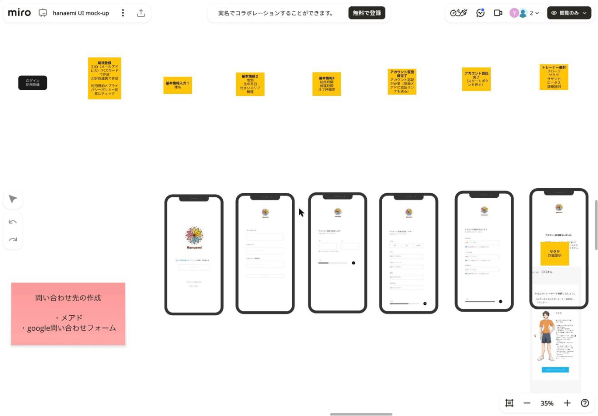
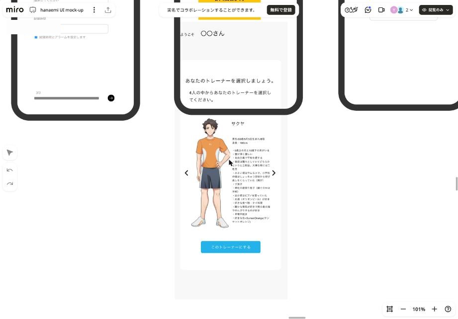
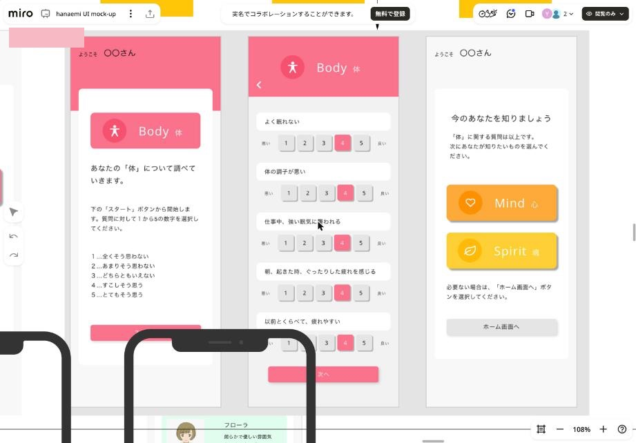
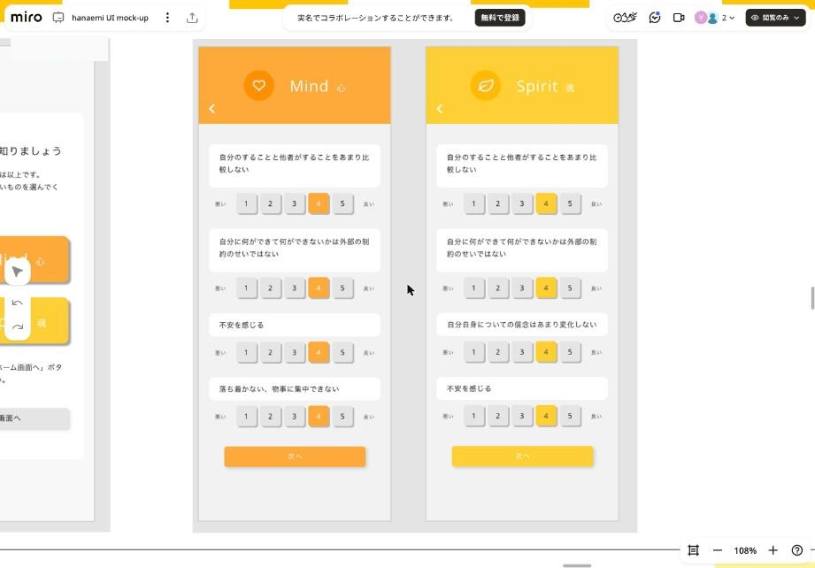
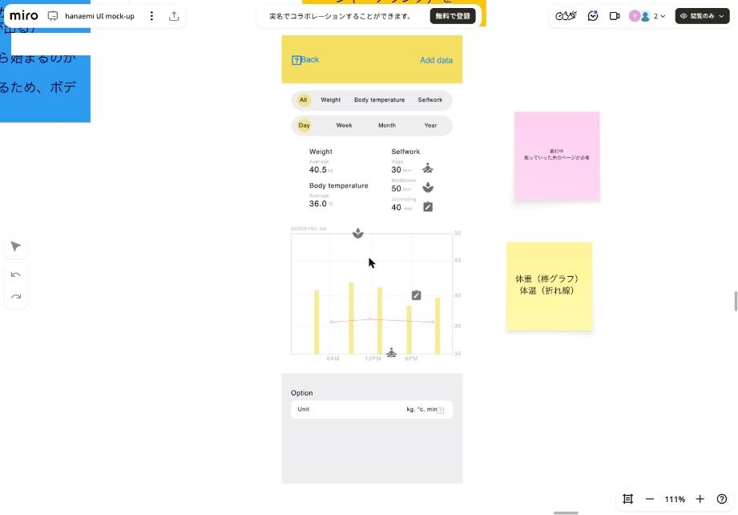
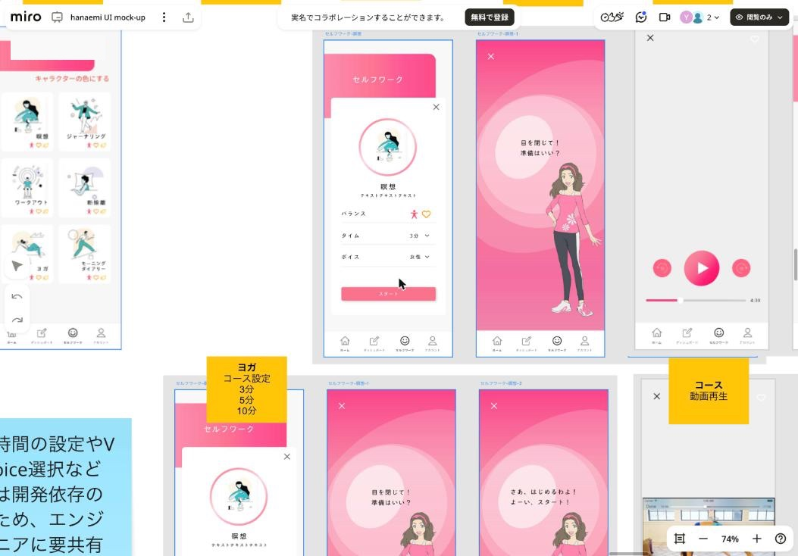
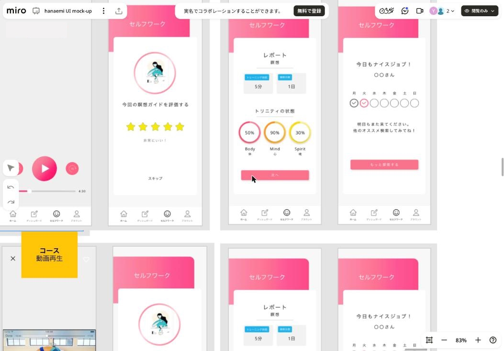
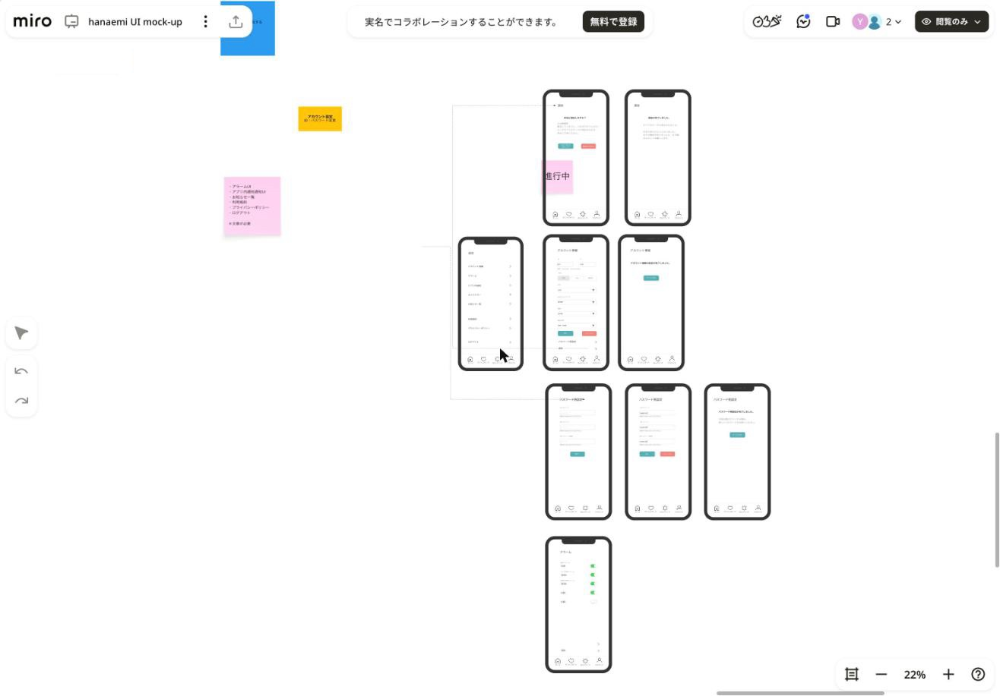
機能仕様
案 は議論段階で、確定していないもの。
トリニティ設問（カンプの設問文）
- よく眠れない
- 体の調子が悪い
- 仕事中、強い眠気に襲われる
- 朝、起きた時、ぐったりした疲れを感じる
- 以前とくらべて、疲れやすい
- 自分のすることと他者がすることをあまり比較しない
- 自分に何ができて何ができないかは外部の制約のせいではない
- 不安を感じる
- 落ち着かない、物事に集中できない
- 自分のすることと他者がすることをあまり比較しない
- 自分に何ができて何ができないかは外部の制約のせいではない
- 自分自身についての信念はあまり変化しない
- 不安を感じる
回答は 1: 全くそう思わない 〜 5: とてもそう思う。心と精神で設問が重複しており、仮の文言と思われる。
認証・アカウント
- メール・パスワード、または Google / Apple 連携
- 仮登録後に認証メール、リンクで本登録
- 利用規約・プライバシーポリシーへの同意必須
- 付箋: メール認証は実装が大変、Google / Apple 連携がラク
- 退会時はすべてのデータを削除
トレーナー
- 4人から1人を選ぶ。設定から変更可
- 声優ボイスでガイド、応援、アラーム
- ナビキャラは OFF にもできる
- 案 最初は2人から選び、残りは早起き回数で解放
- セルフワーク画面をキャラの色に合わせる
トリニティ診断
- 体 → 心 → 精神の順に 1〜5 で回答し、各領域を％で表示
- 何度でも再診断でき、再診断で円グラフをリセット
- 心だけ再診断したい場合も体から始める
- セルフワークを続けると％が改善する
- おすすめセルフワークと連動
- 算出ロジックは未定義
今日の状態
- 晴れ / 曇り / 雨 / 雷 の4択、1日1回
- 日付が変わって最初の起動時にポップアップ
- トリニティとは別データで管理
- カレンダーで可視化、曇りが続くとアラート
- 案 係数 ☀️1 / ☁️0.75 / ☔️0.5 / ⚡️0.25 と移動平均
- 案 生活時間帯に push 通知
体重・体温とグラフ
- 1日に複数回記録、ログとして残す
- グラフは平均値。体重は棒、体温は折れ線
- 日・週・月・年、セルフワーク時間の集計
- 案 生理周期はなくし、Apple Watch / Fitbit 連携を月額で
セルフワーク
- 瞑想 / ヨガ / ジャーナリング / モーニングダイアリー / 断捨離 / フィットネスダンス
- コースは 3 / 5 / 10 分。瞑想はボイス選択あり
- 中断時は別のコーチ・プログラムを提案
- レポートでトリニティの改善を％表示
- 案 終了後に3問アンケート
バッジ
- 達成でバッジ（シングルスター、ダブルスター）
- 種類と獲得条件は未定義
アラーム・通知
- 起床・オフ・就寝の各アラーム、任意時刻の追加
- トレーナーが「おはよう」、スヌーズで「早く起きよう！」
- アラームはマナーモードでも鳴らす。ガイド音・BGMは鳴らさない（イヤホン時は鳴る）
- UX 設計が必要（付箋）
サウンドほか
- オープニングサウンド、ホームとセルフワークにオリジナル曲
- 問い合わせはメール、または Google フォーム
- iPhone SE サイズの画面を作成
- 横画面時のルールは未定
セルフワークが効く領域
| セルフワーク | 体 | 心 | 魂 | 形式 |
|---|---|---|---|---|
| 瞑想 | ● | ● | 静止画と声優の音声 | |
| ヨガ | ● | ● | 動画 | |
| フィットネスダンス | ● | 動画（旧 Zumba） | ||
| ジャーナリング | ● | ● | 未定 | |
| モーニングダイアリー | ● | 未定 | ||
| 断捨離 | ● | 未定 |
データモデル案
ボード上にデータ定義はないため、画面と仕様から推定したたたき台。
erDiagram
USER ||--o| USER_PROFILE : has
USER ||--o{ AUTH_IDENTITY : "logs in with"
USER }o--|| TRAINER : selects
USER ||--o{ TRINITY_DIAGNOSIS : takes
TRINITY_DIAGNOSIS ||--o{ TRINITY_ANSWER : contains
TRINITY_QUESTION ||--o{ TRINITY_ANSWER : answered_by
USER ||--o{ DAILY_CONDITION : records
USER ||--o{ VITAL_LOG : records
USER ||--o{ SELFWORK_SESSION : performs
SELFWORK ||--o{ SELFWORK_COURSE : has
SELFWORK_COURSE ||--o{ SELFWORK_SESSION : played_in
USER ||--o{ USER_BADGE : earns
BADGE ||--o{ USER_BADGE : awarded
USER ||--o{ ALARM : sets
| エンティティ | 主な項目 |
|---|---|
| USER_PROFILE | 姓名、性別、年代 or 生年月日、エリア、職種、婚姻状態、起床・オフ・就寝時間、trainer_id |
| AUTH_IDENTITY | provider（email / google / apple）、provider_uid、email_verified_at |
| TRINITY_DIAGNOSIS | taken_at、body / mind / spirit スコア（0〜100、未回答は NULL） |
| TRINITY_ANSWER | question_id、value（1〜5） |
| DAILY_CONDITION | date（1日1件）、weather（sunny / cloudy / rainy / thunder） |
| VITAL_LOG | recorded_at、weight_kg、body_temp_c（1日に複数件） |
| SELFWORK_COURSE | 種目、duration_min（3 / 5 / 10）、voice、goal、media_url |
| SELFWORK_SESSION | started_at / ended_at、completed、rating（NULL=スキップ）、trinity_before / after |
| ALARM | type（wake / off / bed / custom）、time、enabled |
コンテンツと配色
トレーナー
フローラ
女性 23歳 / Narcissus（水仙）
朗らかで優しい癒し系。おっとりした喋り方だが芯は強い。毎朝の日記が日課。
サザンカ
女性 29歳 / ブーゲンビリア
明るく元気なお姉さん。サボると喝を入れ、頑張るとしっかり褒める。
サクヤ
男性 33歳 / Sunset Orange
懐が深く自由主義。普段は三枚目、大事な時は二枚目。神社の跡取り。
ロータス
男性 27歳 / Chartreuse Green
穏やかで聡明な読書家。礼儀正しく人望がある。
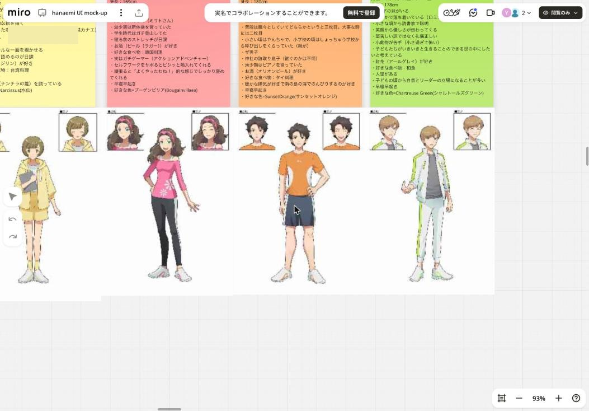
コンテンツ制作（9/13 MTG）
| 種目 | 制作内容 |
|---|---|
| 瞑想 | 最大4レッスン。呼吸なし版・呼吸あり版 × 5分 / 10分。声優と静止画は2パターン |
| ヨガ | 動画撮影。5分版と10分版（テスト次第で追加）。ゴールを3〜5個決め、紐づくコースを最大10個 |
| ワークアウト | フィットネスダンスの動画。5分 / 10分 |
| ジャーナリング・断捨離・モーニングダイアリー | 未定 |
配色
ホームのヘッダーは黄色、セルフワーク画面はピンクのグラデーション。メインカラーは 8/20 MTG で検討タスクになっており、最終決定はボード上で確認できない。
未決事項・仕様の矛盾
ボード内で食い違っているもの
| 項目 | 食い違い | 確認すること |
|---|---|---|
| トリニティ設問数 | 24問 / 25問（最小13問）/ 各5問の15問 / 5+4+4の13問 | 開発向けの「各5問」を正とするか |
| 設問文 | 心と精神で重複 | 正式な文言と反転項目の扱い |
| 3つ目の領域名 | 魂 / 精神 / Spirit が混在 | UI 表記の統一 |
| 基本情報2 | 生年月日 / 年代。婚姻状態はカンプのみ | どちらにするか、婚姻状態は必要か |
| SNS ログイン | Google・Apple / Google・Facebook | Google / Apple で確定してよいか |
| 2番目のタブ名 | ダッシュボード / グラフ | 名称の統一 |
| コース時間 | 3・5・10分 / 5・10分 | 3分版を制作するか |
| トレーナーの解放 | 2人から選び解放 / 4人から自由 | 解放要素を入れるか |
| 生理周期 | 入力 UI あり / 「なくす」 | 初期リリースに含めるか |
| トリニティ未回答 | 「ホームへ」で抜けられる / 最低1つ回答 | 未回答時のホーム表示 |
定義がないもの
ロジック（トリニティ％、おすすめ、天気アイコン、継続日数、曇りアラート）
設問スコアから％への変換、セルフワークによる改善幅、今日の状態の係数と移動平均の適用方法が未定義。
おすすめセルフワークは「トリニティの状態に連動」とだけ書かれている。各領域の天気アイコンを何から決めるかも不明。
継続日数は連続か累計か、日付の境界は0時か起床時間か。曇りアラートは何日で、何を出すか。
未作成の画面
ジャーナリング、モーニングダイアリー、断捨離の実行画面。グラフの詳細。アラーム UI。アプリ内通知、お知らせ一覧、利用規約、プライバシーポリシー（文章も必要）。スタートガイドの中身。
マスタと選択肢
年代、エリア、職種、婚姻状態の選択肢。バッジの種類と獲得条件。終了後アンケートの設問。
技術的な論点
マナーモード時の音の出し分け（iOS / Android のオーディオセッション設定）。iOS でアラームを確実に鳴らす手段には制約があるため技術検証が必要。
時間設定とボイス選択は「開発依存のため要共有」。音声ファイルを時間別に用意するか、組み合わせて再生するか。
メール認証の実装負荷（認証基盤で吸収するか）。退会時の削除方式。横画面と動画の全画面再生。課金（初期ワイヤーのプラン・支払い・クーポン）の扱い。
MTG メモ
年の記載はないが、曜日から 2021 年と推定。
デザイン担当との MTG
- メインカラー（スタートガイドの背景色）を決める
- スタートガイドの内容を決め、イラストを依頼
- アカウントタブの詳細とフロー整理
- アルゴリズム診断と設問の設計
- デザイン担当: 会員登録、キャラクター選択、初期設問、ホーム
UI MTG
- 初期設問25問。気になる領域を選び最小13問に回答、続けるかホームへ
- 毎日、天気マークで今日の状態を選択
- セルフワーク継続で％改善、再回答でリセット
- 今日の状態とトリニティ％は別データ
- カレンダーで可視化、曇りが続くとアラート
ワークアウトの仕様
- 1レッスンは 5分 / 10分コース
- 瞑想: 静止画と声優、呼吸あり・なし × 5分 / 10分
- ヨガ: 動画2本
- ワークアウト: フィットネスダンスの動画
時期不明
- iPhone SE 想定の画面を作成
- マナーモード時の音の扱い
- マインドだけ再診断でもボディから
- アラーム設定の追加は UX 設計が必要（3/6 着手）
- 問い合わせ先の作成
過去のカンプ（参考）
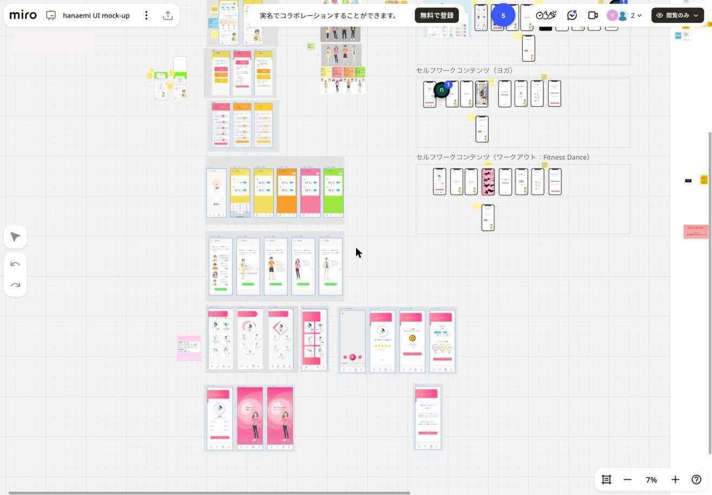
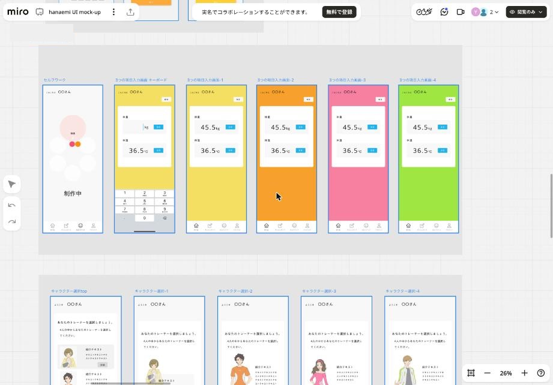
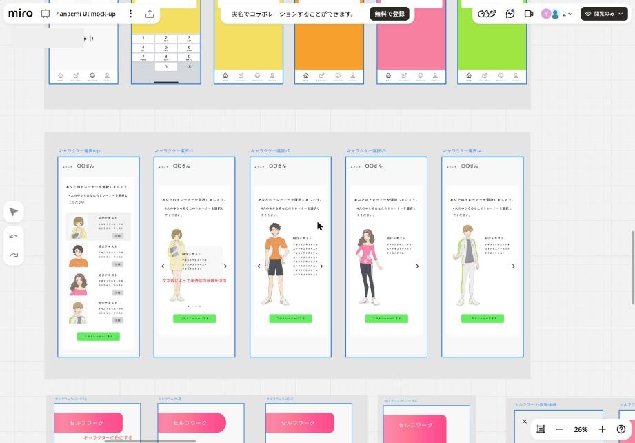
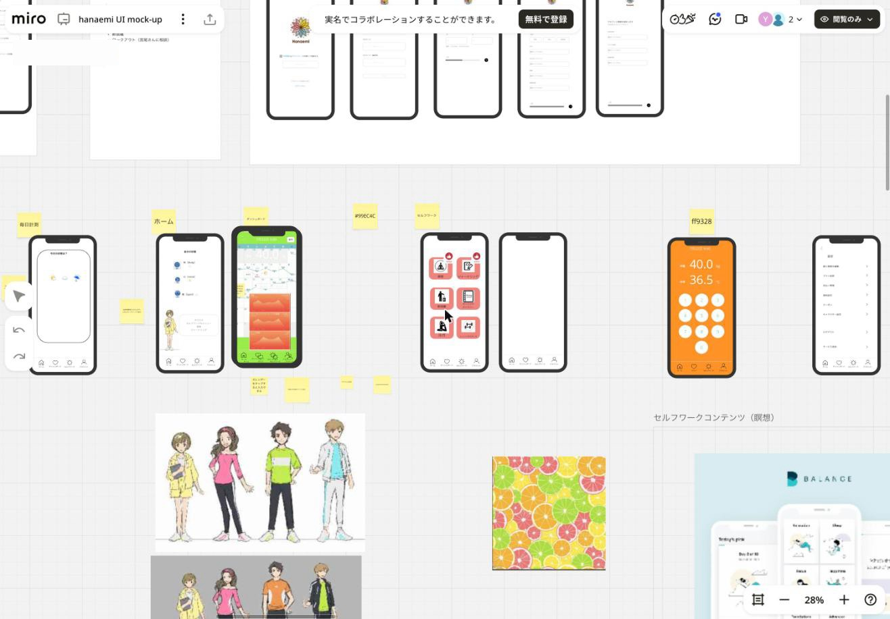
技術選定の選択肢
対象は iOS / Android の両方、インフラは Supabase。最終判断は、末尾の「決めるための前提」が揃ってから行う。
技術選定に効く要件
| 要件 | 技術的な影響 |
|---|---|
| 目覚ましアラーム（マナーモードでも鳴らす） | OS 固有の API が必要。クロスプラットフォームでもネイティブ実装が残る |
| ガイド音声・BGM はマナーモードで鳴らさず、イヤホン時は鳴らす | iOS の AVAudioSession / Android の AudioFocus の細かな制御 |
| 瞑想（静止画＋音声）、ヨガ・ダンス（動画） | 動画配信（ストリーミングかダウンロード）、全画面再生、横画面 |
| トリニティ％、今日の状態、グラフ、カレンダー | 日次ログの集計。データはリレーショナル寄り |
| トレーナー 4 人とボイス | 音声素材が多い。時間別ボイスの組み合わせ |
| SNS ログイン（Google / Apple） | iOS で他社ログインを出すなら Sign in with Apple が必須 |
| 体重・体温・生理周期、ウェアラブル連携の案 | HealthKit / Health Connect との連携 |
| 課金（初期 WF に記載） | アプリ内課金。サブスクなら購読状態の管理 |
| コンテンツの追加・差し替え | 運営向けの管理画面（CMS） |
構成案
速度重視
Flutter＋Supabase（supabase_flutter）＋FCM＋RevenueCat＋Sentry
UI の統一感とリリース速度を優先する場合
TypeScript 統一
React Native（Expo）＋Supabase（supabase-js）＋Expo Push / FCM＋RevenueCat＋Sentry
React で管理画面などの Web も本格的に作る場合
ネイティブ個別実装
Swift（SwiftUI）＋Kotlin（Jetpack Compose）＋Supabase（supabase-swift / supabase-kt）＋FCM＋RevenueCat＋Sentry
OS 固有機能の品質を優先する場合。ユーザー向けの Web がない、または管理画面が小さい場合
どの案でも共通
アラームとオーディオセッションはネイティブコードになる。A・B を選ぶ場合も、最初にこの部分の技術検証（スパイク）を行う。iOS は iOS 26 の AlarmKit でマナーモードを越えて鳴らせるようになったが、対応バージョンと UI の制約は公式資料で要確認。Android は AlarmManager の正確なアラームと権限（SCHEDULE_EXACT_ALARM など）を確認する。
構成案の比較
| 案 A: Flutter | 案 B: React Native | 案 C: Swift / Kotlin | |
|---|---|---|---|
| 考え方 | 1 つのコードベースで UI とロジックを両 OS 共通にする | Web・アプリ・Edge Functions を TypeScript に統一する | 各 OS を公式の言語・UI フレームワークで個別に実装する |
| 強み | 同じ画面を一度で作れ、両 OS の差分が生まれにくい。リング型グラフなど独自 UI を描きやすい。ホットリロードで反復が速い | 型・入力チェック・API 呼び出しを Web と共有できる。EAS Update で OTA 更新。Web の人材を活かせる | OS 固有機能を制約なく使え、ブリッジ層がない。単一言語・単一ツールチェーンのため AI の出力も安定しやすい。OS の新機能にすぐ対応できる |
| 品質を保つ仕組み | ネイティブ機能（アラーム・音声・ヘルスケア）はプラグイン / Platform Channel に分離し、境界のインターフェースを先に決める。使うプラグインの保守状況を選定時に確認する | ネイティブ機能は Expo Modules（Swift / Kotlin）に切り出し、境界を明確にする。Web と共有するコードは monorepo のパッケージにまとめる | 1 つの Issue / PR で両 OS を対応し、PR テンプレートに iOS / Android のチェック欄を置く。デザイントークンを 1 か所で定義して両 OS 向けに書き出す |
| 残るコスト | ネイティブ部分は Dart＋Swift＋Kotlin の 3 言語になる。ブリッジ部分の不具合は追いにくい。OS の新機能はプラグインの対応待ちになりうる | ネイティブ部分は TypeScript＋Swift＋Kotlin の 3 言語になる。React Native / Expo のバージョン追従。ブリッジ部分の不具合は追いにくい | 実装・レビュー・実機確認・CI・ストア申請が 2 系統。片方だけ直す反映漏れのリスクがある。アプリ側に共有ロジックが大きく残るなら Kotlin Multiplatform を検討 |
| 向いている条件 | UI の統一感とリリース速度を優先する。Dart に抵抗がない | React で管理画面などの Web も本格的に作る | OS 固有機能の品質を優先する。ユーザー向けの Web がない、または管理画面が小さい |
どの案でも共通の前提
- AI 駆動開発での見え方: AI がコードを書く前提では「書く量」の差は縮まり、レビュー・実機確認の量と、構成の分かりやすさ（境界の少なさ）の重みが増す。この観点で 3 案を比べる
- ロジックは Supabase に寄せる: トリニティ％や継続日数の計算は Postgres 関数 / Edge Functions に置き、アプリは表示に徹する
- 仕様の正本を 1 つにする:
docs/の画面仕様と DB から生成した型を実装の参照元にする - E2E テスト: Maestro など両 OS で同じシナリオを流せるツールで、OS 間の挙動差を検出する
- 選び方の目安: Web（管理画面）の規模が大きい → B、OS 固有機能の品質を優先 → C、UI の統一とリリース速度を優先 → A。現時点のボードにユーザー向け Web の記載はない
モバイルアプリ（クライアント）
| 選択肢 | 向いているケース | 長所 | 短所・注意 |
|---|---|---|---|
| Flutter | 少人数で両 OS を同時に出す | UI の再現性が高く、リング型グラフなど独自 UI を描きやすい。1 コードベース | アラーム・オーディオ・HealthKit はプラグインかネイティブコード頼み。Dart の人材 |
| React Native（Expo） | チームが TypeScript / Web に強い | Web 人材を活かせる。EAS Update で OTA 更新 | OS 固有機能はネイティブモジュールの自作になりやすい |
| ネイティブ（Swift / Kotlin） | アラームや音声の品質を最優先し、工数を許容できる | AlarmKit / AlarmManager、HealthKit / Health Connect などを制約なく使える | 両 OS で別々に実装するため工数がほぼ 2 倍。担当者も 2 系統必要 |
| Kotlin Multiplatform | Kotlin に強く、ロジックだけ共通化したい | ロジック共有とネイティブ UI の両立 | 情報・人材がまだ少ない。iOS の UI は SwiftUI 併用が現実的 |
バックエンド → Supabase に決定（比較のため残す）
| 選択肢 | 長所 | 短所・注意 |
|---|---|---|
| Firebase Auth / Firestore / Storage / Functions | 立ち上げが最速。認証・プッシュ・分析・クラッシュ収集まで揃う | ドキュメント型のため、日次ログの集計やグラフ用クエリは設計の工夫が必要。ベンダーロックイン |
| Supabase Postgres / Auth / Storage / Edge Functions | SQL で集計しやすい。データモデルをそのまま表にできる。行レベルセキュリティ | プッシュや分析は別サービスで補う |
| AWS Amplify、または Cognito＋Lambda＋RDS | 拡張性と細かい制御。社内に知見があれば有利 | 構築・運用の負荷が高い。小規模では過剰になりがち |
| 自前 API NestJS / Go / Rails＋Cloud Run 等＋Postgres | ロジックを自由に書ける。移行しやすい | 認証・インフラ・運用を自分たちで持つ |
トリニティ％やおすすめのロジックを後から調整し続けるなら、計算はサーバー側に置き、アプリ更新なしで変えられるようにする。
認証
| 選択肢 | メモ |
|---|---|
| Firebase Auth | メール・Google・Apple に対応。メール認証のリンク送信も標準 |
| Supabase Auth | 同上。Postgres のユーザーと直接結び付く |
| Amazon Cognito | AWS 構成なら。UI のカスタマイズはやや手間 |
| Auth0 / Clerk など | 高機能だが、ユーザー数に応じた費用 |
付箋の「メール認証は実装が大変」は、上のいずれかでほぼ解消する。初回は SNS ログインのみにする案もある。
動画・音声の配信
| 選択肢 | 長所 | 短所・注意 |
|---|---|---|
| アプリに同梱 | 実装が最も簡単。オフラインで使える | 容量が増える。差し替えにはアプリ更新が必要 |
| ストレージ＋CDN Firebase Storage、S3＋CloudFront、R2 | 安い。MP4 をそのまま配信 | 画質の自動切り替えなし。視聴計測は自前 |
| 動画配信サービス Mux、Cloudflare Stream | HLS 変換・画質切り替え・視聴分析まで任せられる | 視聴時間に応じた従量課金 |
| MediaConvert＋CloudFront | 細かく制御できる | 構築の手間 |
瞑想は静止画＋音声なので音声配信だけで済む。動画は 1 種目あたり 2 本程度と少なく、初期はストレージ＋CDN か同梱でも足りる可能性が高い。早朝利用が中心なので、事前ダウンロードも検討する。
コンテンツ管理・課金・その他
コンテンツ管理
- BaaS の管理画面を直接使う（費用ゼロ。非エンジニアには危ない）
- ヘッドレス CMS: microCMS（日本語 UI）、Contentful、Sanity
- Retool などで DB 直結の管理画面
- 自作の管理画面（自由度・工数とも最大）
アプリ内課金
- RevenueCat: StoreKit と Play Billing をまとめて扱い、購読状態を一元管理。一定売上を超えると手数料
- 直接実装: 手数料なし。レシート検証とサーバー通知を自前で持つ
- 課金するかどうか自体が未決（B-13）
通知とヘルスケア
- アプリ内リマインドはローカル通知、運営からのお知らせは FCM / APNs
- iOS は HealthKit、Android は Health Connect。Fitbit は Web API
- 生理周期は特にセンシティブ。保存先と同意の取り方を先に決める
分析・エラー収集
- 行動分析: Firebase Analytics、Amplitude、Mixpanel
- クラッシュ: Crashlytics、Sentry
- 設定値の切り替え・A/B: Remote Config など
ビルド・配信
- Flutter: Codemagic、GitHub Actions＋fastlane、OTA は Shorebird
- React Native: EAS Build / EAS Update
- ネイティブ: Xcode Cloud、GitHub Actions＋fastlane
Supabase 前提で決めること
最初に固めると後が楽なのは「環境の分け方」「マイグレーション管理」「RLS の方針」「ロジックの置き場所」の 4 つ。Supabase の仕様（プランの上限、キーの名称など）は変わりやすいので、決定前に公式ドキュメントで確認する。
| 分類 | 項目 | 決めること・選択肢 |
|---|---|---|
| 運用 | プランとリージョン | Free プランは一定期間アクセスがないと停止する。本番は Pro 以上。リージョンは東京（ap-northeast-1）。コンピュートのサイズ |
| 運用 | 環境の分け方 | dev / stg / prod を別プロジェクトにするか、Supabase Branching（PR ごとのプレビュー環境）を使うか |
| 運用 | バックアップ | 日次バックアップで足りるか、PITR（任意時点への復元、有料アドオン）を付けるか。健康データを扱うので PITR 推奨 |
| 開発 | マイグレーション管理 | Supabase CLI のマイグレーションで SQL を Git 管理する。Studio（管理画面）で直接スキーマを変えない運用ルール |
| 開発 | ローカル開発 | Supabase CLI（Docker）でローカルに同じ構成を立てる。シードデータの用意 |
| 開発 | 型の生成 | supabase gen types で DB の型を生成する（TypeScript など）。Flutter / ネイティブは型生成の手段を別途選ぶ |
| 開発 | クライアント SDK | Flutter: supabase_flutter / RN: supabase-js（セッション保存先に SecureStore など） / ネイティブ: supabase-swift・supabase-kt |
| DB | スキーマ設計 | 05 のデータモデルを Postgres の表に落とす。ユーザー別データは auth.users の ID を外部キーにする |
| DB | RLS（行レベルセキュリティ） | 全テーブルで RLS を有効化し、「本人の行だけ読み書き可」のポリシーを書く。マスタ（設問、セルフワーク）は全員読み取りのみ。RLS のテスト方法（pgTAP など） |
| DB | 日付とタイムゾーン | timestamptz で保存し、ユーザーのタイムゾーンを持つ。「今日」の境界（0 時か起床時刻か）を決める（B-5） |
| DB | 集計の持ち方 | グラフ・継続日数・トリニティ％を、都度 SQL で計算するか、日次サマリー表やマテリアライズドビューに持つか |
| ロジック | ロジックの置き場所 | ① Postgres 関数（RPC）・トリガー ② Edge Functions（Deno / TypeScript） ③ 別の API サーバー。トリニティ％の算出はサーバー側に置き、アプリ更新なしで調整できるようにする |
| ロジック | 定期実行 | Supabase Cron（pg_cron）で、曇りアラートの判定、日次集計、退会者データの削除などを回す |
| ロジック | Webhook の受け口 | RevenueCat、ストアのサーバー通知などを Edge Functions で受ける。署名の検証 |
| 認証 | ログイン方式 | Google / Apple はネイティブの SDK でトークンを取り、signInWithIdToken で Supabase に渡すのが UX 上よい。Web 画面経由の OAuth にするか |
| 認証 | メール送信（SMTP） | 標準のメール送信は送信数の制限が厳しく本番向きではない。Resend、SendGrid、Amazon SES などの SMTP を設定する。メール文面の日本語化 |
| 認証 | ディープリンク | メール認証・パスワード再設定のリンクからアプリに戻す URL スキーム / Universal Links / App Links とリダイレクト URL の許可設定 |
| 認証 | 退会（アカウント削除） | App Store はアプリ内からの削除を求める。auth.users の削除は秘密鍵が必要なので Edge Function 経由。関連テーブルは ON DELETE CASCADE、Storage のファイルも削除する |
| 認証 | キーの扱い | アプリに入れるのは公開用のキー（publishable / 旧 anon）だけ。秘密鍵（secret / 旧 service_role）は Edge Functions とサーバーにのみ置く |
| Storage | バケット設計 | セルフワークの素材（全員読める・公開バケットか署名付き URL か）と、ユーザーのファイル（本人のみ）を分ける。Storage にも RLS |
| Storage | 動画を Supabase Storage に置くか | プランごとのファイルサイズ上限と、転送量（egress）の課金を確認する。動画が増えるなら Cloudflare R2 / Stream や Mux に分ける |
| 通知 | プッシュ通知 | Supabase に標準のプッシュはない。FCM（iOS も APNs 経由で送れる）を直接使うか、OneSignal / Expo Push を使う。端末トークンの表と、送信用の Edge Function |
| 課金 | 購読状態の保持 | RevenueCat の Webhook で購読状態の表を更新し、有料コンテンツの RLS や判定に使う |
| オフライン | オフライン対応 | Supabase にはオフライン同期がない。早朝・電波の弱い場所でも記録させるなら、端末側の DB（SQLite / drift / WatermelonDB）や PowerSync を検討 |
| 運用 | 監視・ログ | Supabase のログとレポートに加え、Sentry などでアプリとEdge Functions のエラーを集める |
| 運用 | 管理画面 | Studio を運営に開放するのは危ない。運営用の権限（ロール）と、microCMS / Retool / 自作の管理画面のどれにするか |
| データ | 機微情報の保護 | 体重・体温・生理周期を扱う。保存時暗号化は標準。列単位の暗号化（Vault など）や、閲覧ログが必要か |
決めるための前提（要回答）
| 前提 | 選定への影響 |
|---|---|
| チームの得意技術と人数 | Flutter / React Native / ネイティブの選択（両 OS 前提なので、ネイティブなら iOS と Android の担当が別に必要） |
| 初回リリースの範囲と時期 | アラーム・課金・ヘルスケア連携を初回に入れるか |
| アラームは必須か | ネイティブ実装の比重。iOS / Android それぞれの最低対応バージョン |
| コンテンツの更新頻度と運営体制 | 同梱か配信か、CMS の要否 |
| 課金の有無と形式 | RevenueCat か直接実装か |
| 月額の予算 | Supabase のプランとアドオン（PITR など）、動画配信の費用を許容できるか |
| 既存の契約・資産（リポジトリ、使っている SaaS） | 周辺サービス（メール送信、分析、監視）の選択 |